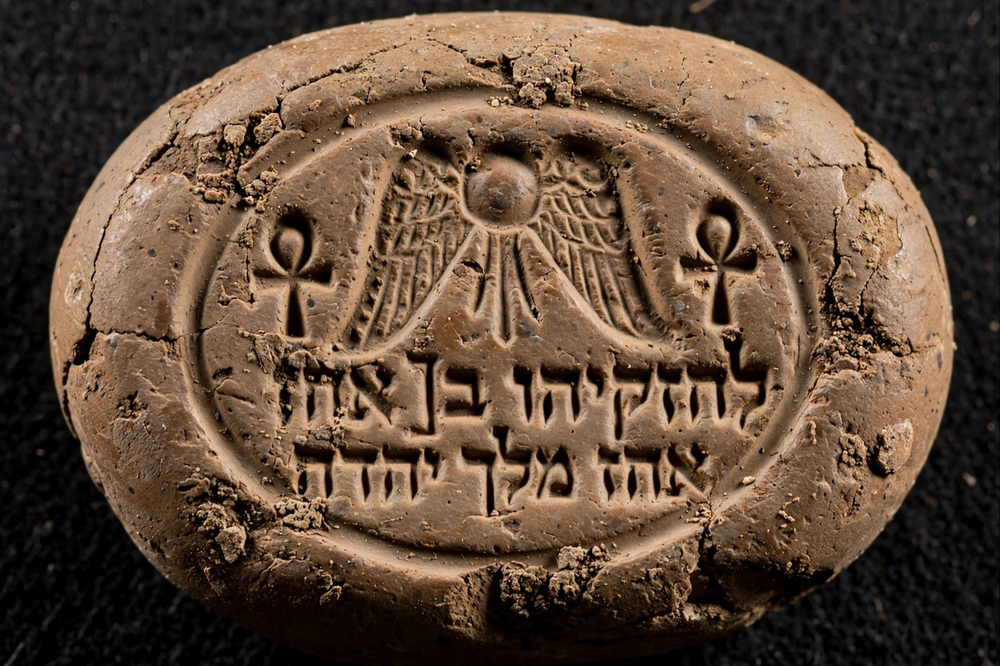

| Hezekiah | |
|---|---|
| Reign | c. 715–686 BC (disputed chronology) |
| Predecessor | Ahaz |
| Successor | Manasseh |
| Father | Ahaz, King of Judah |
| Mother | Abijah (Abi) |
Hezekiah was the son of Ahaz and the 13th king of Judah in the ancient southern Levant. The Hebrew Bible presents him as a righteous king who undertook major religious reforms, centralising worship in Jerusalem and removing high places, pillars and the bronze serpent Nehushtan. He reigned in the late 8th and early 7th centuries BC, contemporary with the prophet Isaiah.

Hezekiah is credited with strengthening Jerusalem's fortifications, including the Broad Wall, and with cutting the Siloam Tunnel to bring water from the Gihon Spring inside the city in preparation for an Assyrian siege — an inscription found in the tunnel describes its excavation by two teams digging towards each other.
After revolting against Assyria, Judah was invaded by Sennacherib in 701 BC. Many fortified cities, including Lachish (see Siege of Lachish), fell, and Jerusalem was threatened. Biblical accounts say a plague or angel destroyed the Assyrian army; Assyrian records say Hezekiah paid tribute of gold, silver and other goods. Both agree Jerusalem was not captured.
The Bible recounts Hezekiah's serious illness and recovery, and an embassy from Babylonian envoys that later tradition linked to the Babylonian exile. He was succeeded by his son Manasseh. Hezekiah is listed in the genealogy of Jesus in the Gospel of Matthew and is regarded as one of Judah's most important kings by biblical writers.